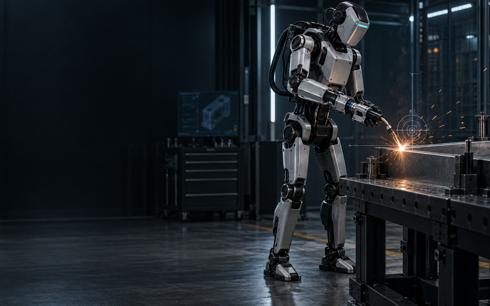

Detect deviation
The actual tool position is compared against the planned path.

Precision-enhancing robotics
Akribis develops a compact device that corrects the motion errors of humanoid robots directly at the tool — enabling precise processes on two legs.
Concept visualisation
01 / The Challenge
Humanoid robots can move through human-scale work environments. But working on two legs introduces vibrations and positioning errors — too much for weld seams, adhesive beads, or drill holes.
Akribis closes this gap where precision actually matters: between the robot and the tool.
The Principle
The device handles the fine correction while the humanoid robot performs the large movement and positioning.
02 / Our Approach
A compact add-on actuator at the end-effector corrects small deviations without replacing the capabilities of the humanoid robot.
The actual tool position is compared against the planned path.
Short, fast correction movements compensate residual errors close to the process.
The tool path remains stable — even as the robot body moves.
03 / Applications
Consistent seam guidance despite movement of the robot platform.
↗Reproducible paths and uniform material application.
↗Precise positioning at hard-to-reach work locations.
↗04 / Partnership
We are looking for partners who want to realise the next generation of industrial robotics with us — through expertise, components, manufacturing capabilities, or financial support.
Interested in a partnership?
Contact details will be added with the final project launch.